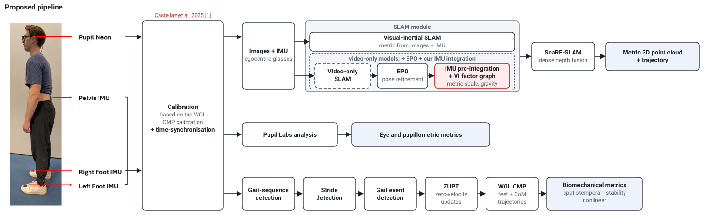
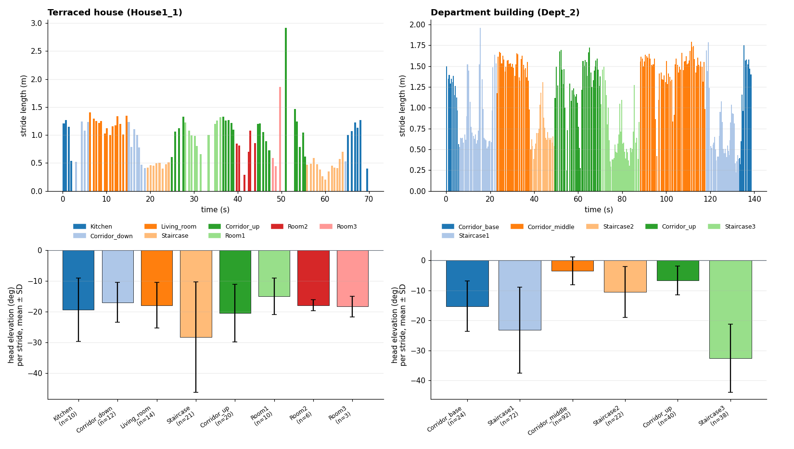

Neon-IMU-Pipeline
By leveraging our novel minimal-sensor protocol and processing pipeline, we are able to study the effect of indoor environmental features on gaze and movement, allowing us to identify areas of increased fall risk and sub-optimal movement patterns.
Proposed protocol and pipeline

The pipeline provides:
- the trajectory of motion in the indoor environment, including a 3D reconstruction map;
- gait metrics at every step and stride;
- gaze and pupillometric measures at every step and stride, and over a fixed window period.
Combining these, we are able to detect unstable or compensatory steps and analyse the context and environment that resulted in such steps.
Example results
Terraced house (House1_1)
Department building (Dept_2)

Gait and head posture from the same recordings. Top: stride length of every stride (left and right foot) over the recording, as one bar per stride coloured by the region of the building it was walked in. Bottom: head elevation in each region (mean ± SD over the strides in it).
Validation
Each sub-part of the pipeline has been validated using open-source datasets and data collected at the motion capture laboratories at Liverpool John Moores University: